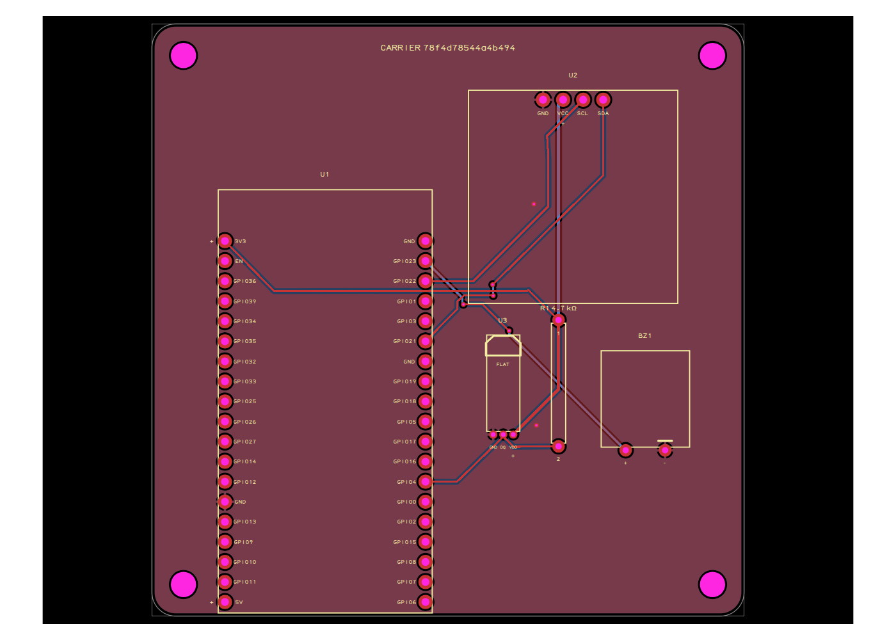
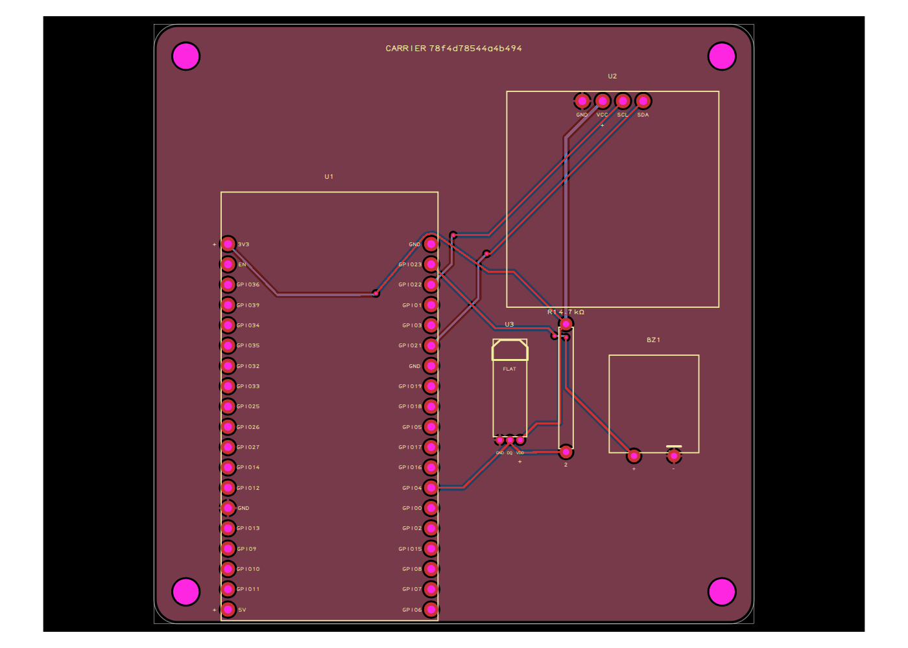
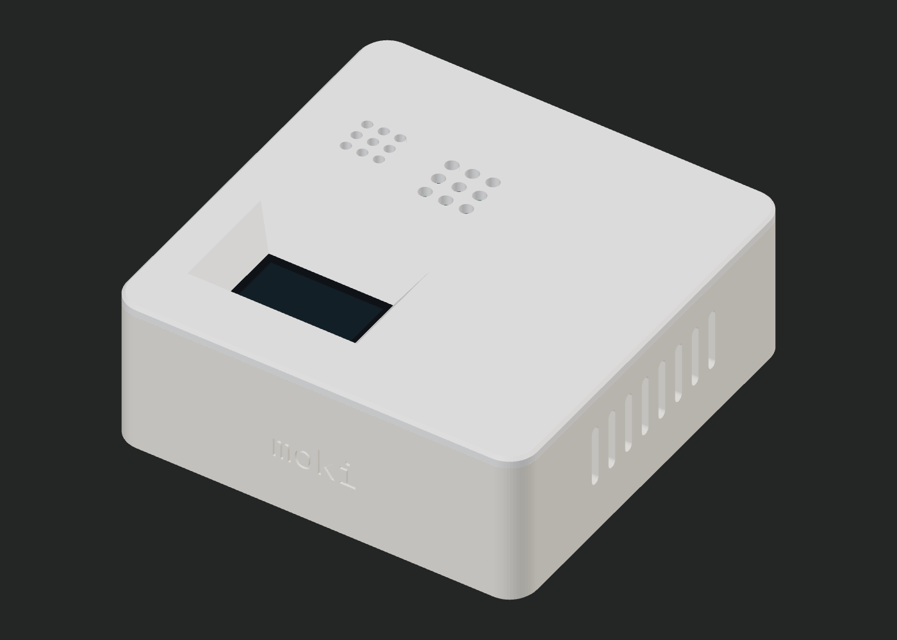
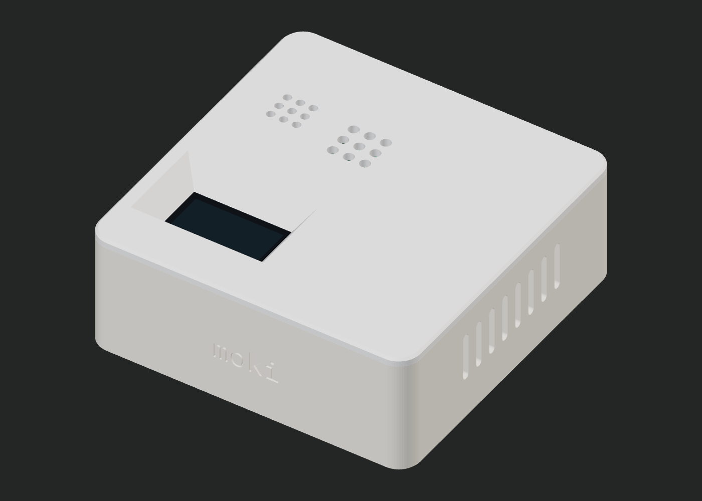

Move the OLED. Its case window follows.
U2 moves 4 mm right. PCB remains 75 × 75 mm. Native DRC errors: 0; physical copper oracle: PASS; calculated case fit failures: 0. Source TSX unchanged; verified firmware reused.

PCB before · U2 centre (15.85, 27.9) mm
PCB after · U2 centre (19.85, 27.9) mm
Case before · window X 15.85 mm
Case after · window X 19.85 mm; regenerated lid differs
Dev jobs: before 800e9456-853d-413c-a396-ac1cef9dd6e9; after dd00c65f-ab6f-40d4-8345-723ea806c07e. Exact source artifacts are retained in dev-before and dev-moved. Geometry uses catalog estimates; no physical print or test fit is claimed.